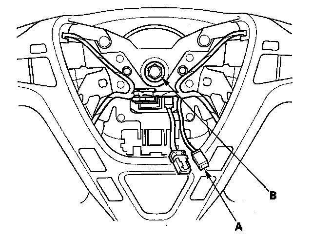
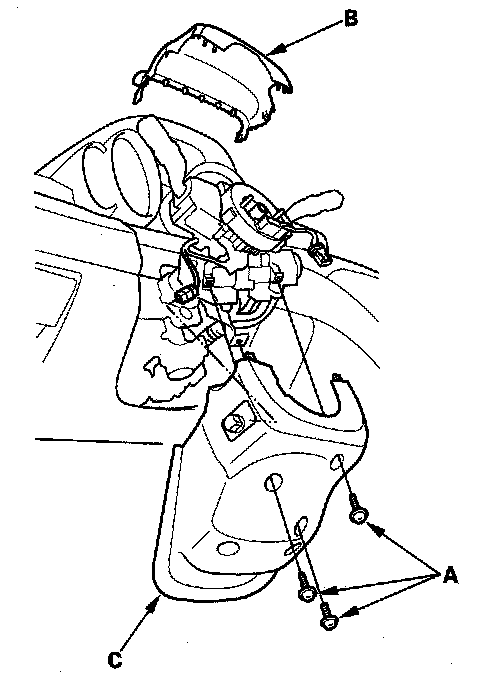
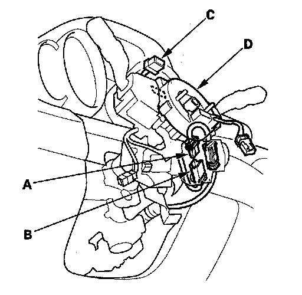
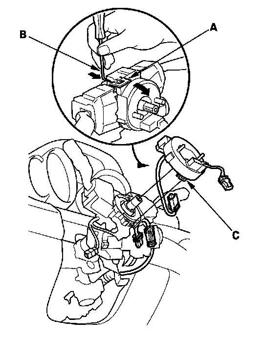
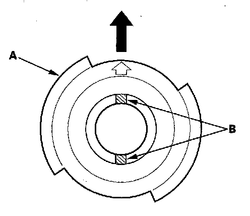
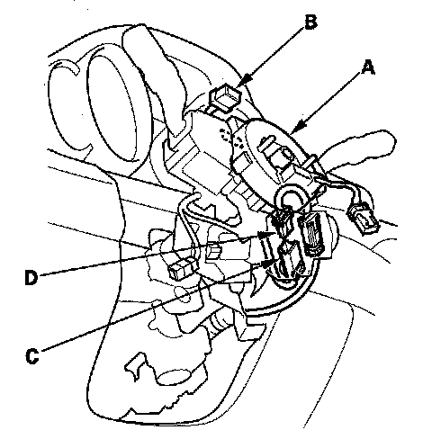
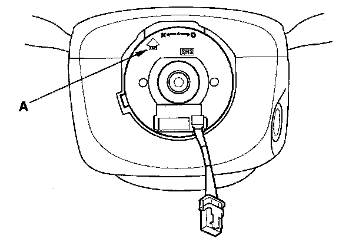
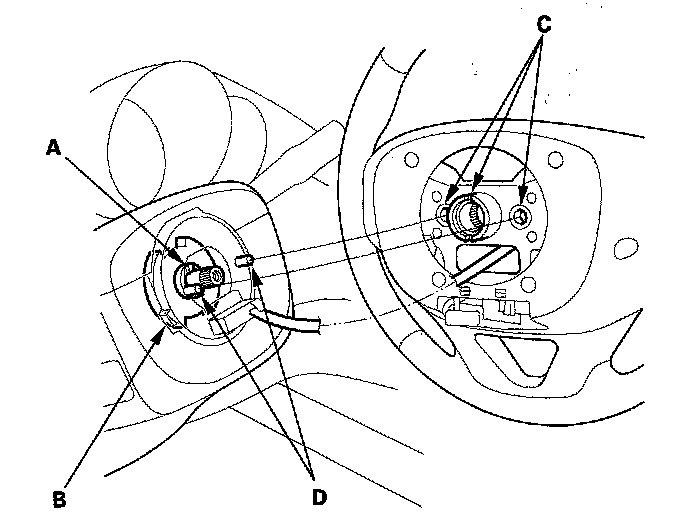
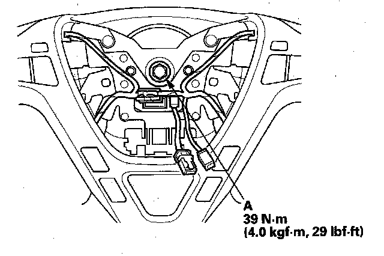

Clockspring Assembly / Spiral Cable: Service and Repair
Cable Reel ReplacementRemoval
1. Make sure the front wheels are aligned straight ahead.
2. Disconnect the negative cable from the battery, and wait at least 3 minutes.
3. Remove the driver's airbag.

4. Disconnect the connector (A) from the cable reel, then remove the steering wheel bolt (B).
5. Confirm that the front wheels point straight ahead, then remove the steering wheel with a steering wheel puller. Do not tap on the steering wheel or steering column shaft when removing the steering wheel.

6. Remove the column cover screws (A), then remove the column covers (B, C).

7. Disconnect the dashboard wire harness 4P connector (A) from the cable reel 4P connector (B), then disconnect the dashboard wire harness 20P connector (C) from the cable reel (D).

8. Release the lock tab (A) under the cable reel connector with a 90° hook shaped tool (B). Slide the tool below the cable reel connector just above the lock tab. Release the lower lock tab (C), and slide the cable reel off the column.
Installation
1. Before installing the steering wheel, align the front wheels straight ahead.
2. If not already done, disconnect the negative cable from the battery, and wait at least 3 minutes.

3. Set the turn signal canceling sleeve (A) so that the projections (B) are aligned vertically.

4. Carefully install the cable reel (A) on the steering column shaft. Then connect 13P or 5P connector (B) to the cable reel, and connect the 4P connector (C) to the dashboard wire harness 4P connector (D).
5. Install the steering column covers.

6. If necessary, center the cable reel (New replacement cable reels come centered.). Do this by first rotating the cable reel clockwise until it stops. Then rotate it counterclockwise (about three turns) until the arrow mark (A) on the cable reel label points straight up.

7. Position the two tabs (A) of the turn signal canceling sleeve (B) as shown, and install the steering wheel on to the steering column shaft, making sure the steering wheel hub (C) engages the pins (D) of the cable reel and tabs of the turn signal canceling sleeve. Do not tap on the steering wheel or steering column shaft when installing the steering wheel.

8. Install a new steering wheel bolt (A), then reconnect the connectors.
9. Install the driver's airbag.
10. Reconnect the negative cable to the battery.
11. After installing the cable reel, confirm proper system operation:
- Turn the ignition switch ON (II); the SRS indicator should come on for about 6 seconds and then go off.
- After the SRS indicator has turned off, turn the steering wheel fully left and right to confirm the SRS indicator does not come on.
- Make sure the horn works.
- Make sure the cruise control buttons work.
- Make sure the steering wheel audio controls works.
- Make sure the INFO/SEL buttons works.